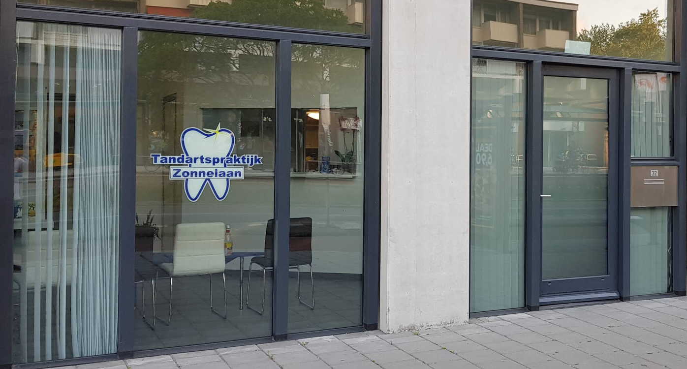

Tandartsenpraktijk Zonnelaan
Persoonlijke, moderne tandheelkundige zorg voor het hele gezin in Groningen.

Bezoek of bel ons
Zonnelaan 32 in Groningen, goed bereikbaar per fiets, auto en openbaar vervoer.
Za–Zo: Gesloten
Onze zorg
Van preventie tot specialistische behandelingen, helder uitgelegd.
Preventief
Halfjaarlijkse controles, een uitgebreid eerste consult en een spoedconsult wanneer u klachten heeft.
Lees meerDiagnostiek
Kleine controlefoto's van uw kiezen, een gerichte foto van één tand of kies en een overzichtsfoto van de gehele kaak.
Lees meerRestauratief
Wij herstellen tanden en kiezen met witte composietvullingen of glasionomeer, stevig verankerd met een hechtlaag.
Lees meerKroon- en brugwerk
Kronen van porselein, zirkonium of goud, en bruggen of plakbruggen die ontbrekende tanden vervangen.
Lees meer